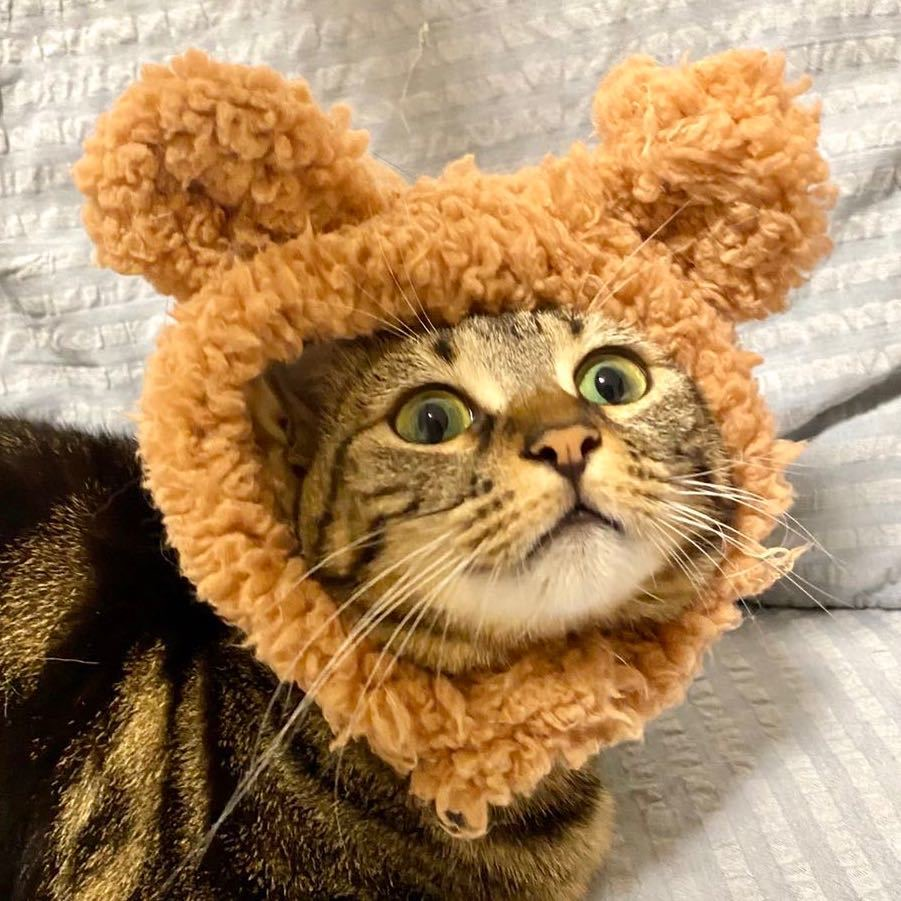
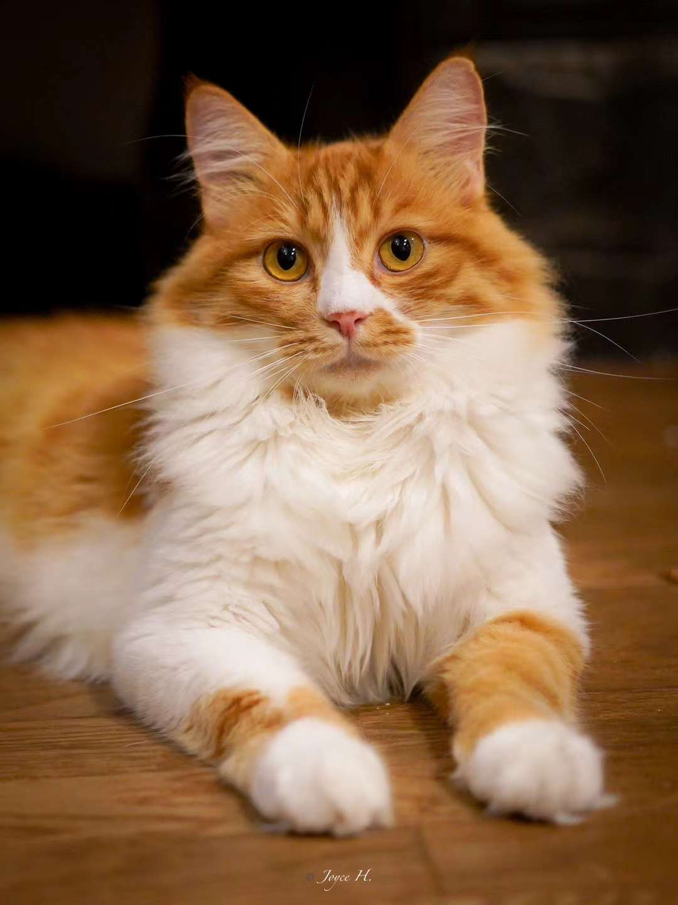
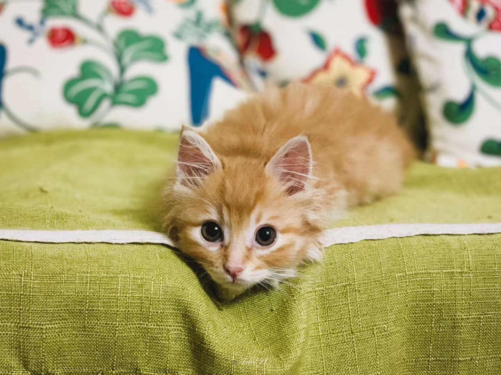
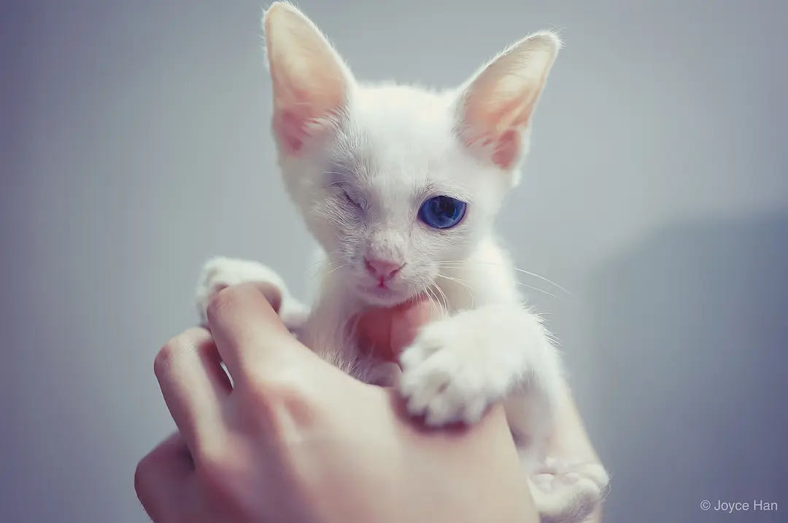

Ariel
The founder of the team, Ariel has been involved in stray cat rescue in Shanghai since 2008. With
extensive experience in rescuing and fostering stray cats, she personally rescued and rehomed around 200
kittens before forming the team.


Eve
A graduate in veterinary medicine, Eve initially joined a campus-based stray cat rescue group before
becoming part of our team. She provides guidance on the socialization and medication of cats, bringing
professional expertise to our efforts.
Joyce
Starting her rescue journey in 2019, Joyce rescued her first stray cat. After meeting Ariel, they joined
forces to establish the cat rescue team. Joyce brings rich experience in capturing cats, whether for medical
treatment or TNR, always adhering to legal and ethical standards.


Zhen
Apart from regular responsibilities, Zhen excels in video and photo production, as well as managing social
media accounts. During her tenure overseeing the team's accounts, the total followers across various
platforms exceeded 100,000.